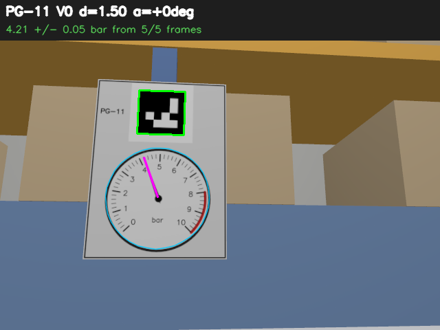

fault_injection_single_gauge · mission 20261109_003523_0308 ·
state COMPLETED
11.0 s sim / 42.4 s wall ·
source: Gazebo Harmonic simulation, values read by OpenCV from simulated camera frames
Gauges 1: accepted 0, unresolved 1 · observations 2 · viewpoints 3 · decisions: RETRY_SAME: 1, MOVE_NEW: 2, UNRESOLVED: 1
| Gauge | Result | Obs. | Viewpoints | Decisions |
|---|---|---|---|---|
| PG-11 | UNRESOLVED [NAVIGATION_FAILURE] — viewpoint unreachable and no viewpoint left | 2 | 3 | RETRY_SAME → MOVE_NEW → MOVE_NEW → UNRESOLVED |
UNRESOLVED [NAVIGATION_FAILURE] — viewpoint unreachable and no viewpoint left
